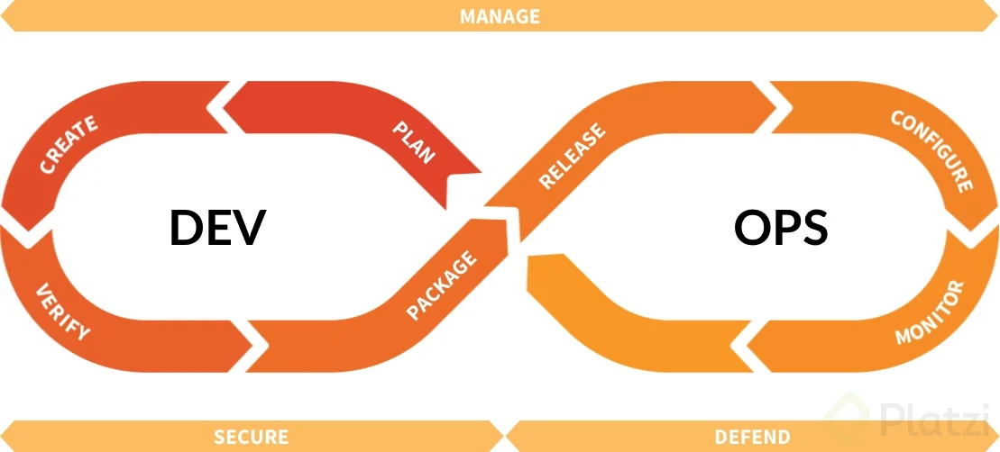

¿Que debo aber sobre este tema?
Corrientemente, los productos de una fase se revisan para verificar si están completos, si son exactos y se aprueban antes de iniciar el trabajo de la siguiente fase. No obstante, no es inusual que una fase entable su comienzo antes de la aquiescencia de los productos entregables de la fase previa, cuando los peligros implicados se consideran admisibles.
